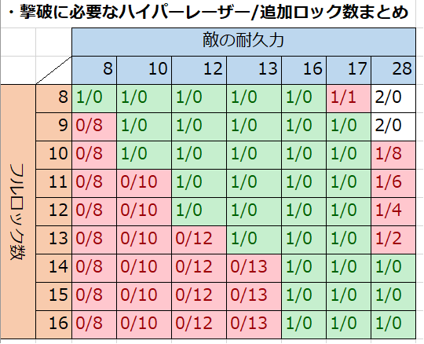

8ロックパターン
どういうものか
本作の2号機、WR-02Rは最大で16ロックまでパワーアップできます。当然、ハイパーレーザーのロック数も同様です。
しかしやってみると、16ロックでハイパーレーザーするのはかなり困難です。原因はいくつかあります。
- 16回もロックする前にどこかでミスる
- ロックし終わる前に敵が逃げる
- そもそも16ロックも耐える敵が少ない
ゲーム自体が速攻推しなので、ハイパーレーザーをミスりやすい＝クリアも不安定です。この辺が「WR-02Rは扱いにくい」と言われるゆえんの1つでしょう。
であれば、考えを変えてみましょう。ロック数を増やすと不安定なら、増やさなければ良いのでは?
という訳で、このパターンが生まれました。つまりロック数をデフォルトの8のまま進むやり方です。
何が良いの?
簡単に言うと、ハイパーレーザーを使える頻度と安定性が激増します。
以下の画像は、道中に出現する耐久力とロック数の関係です。緑の部分が、ハイパーレーザー1回で倒しきれる範囲になっています。
これを見ると分かりますが、8ロックでハイパーレーザーしきれない敵はそういません。1つの面で、多くて数機です。
爆風に他の敵を巻き込める点も考慮すると、むしろ小回りが利くので有利とすら言えるかも。
何より、ハイパーレーザーを使える場面や回数が増えて非常に爽快です。爆発音を連発するのは、かなり気持ちが良いもの。
WR-01Rより着弾が速いため、瞬間火力は随一です。ボスを10秒未満で瞬殺する感覚は、慣れるとやみつきになります。
具体的なやり方
方法は簡単で、ショットパワーアイテム(赤)以外はいっさい取らない1だけです。
なので、アイテムを落とす敵を把握しましょう。落とすアイテムは固定なので、パターン化は難しくありません。
また、ロックを吸われる敵やパーツにも対処しましょう。事故は仕方ないとして、いつも起こるなら策を講じます。
- Pro-torのビットは、ラウンドディバイダーやハイパーレーザー中のロックできない「硬直時間」でやり過ごせます。
- 吸われた分は諦めてレーザーを逃がし、改めてロックを仕切り直すのも手です。急がば回れ。
テクニックは要求されますが、使いこなせば抜群の爽快感で答えてくれます。シリーズ中、もっとも仕様変更の恩恵を受けた機体ではないでしょうか。
1. 実際には1, 2個取ってもさほど問題無いですが、この方が覚えやすいと思います ↩